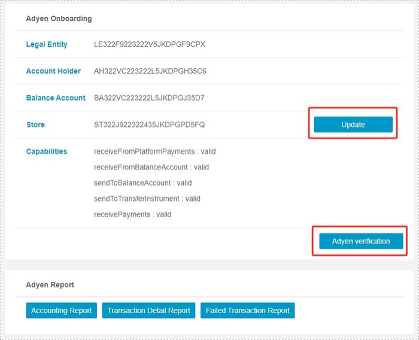
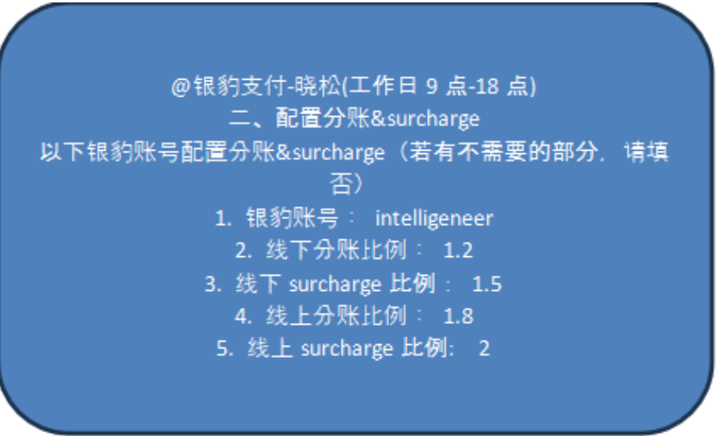

YB - ADAPAY 支付绑定设置流程
2024年11月13日 · Charlie
快速通道: 绑定刷卡机 设置transfer schedule 商户操作须知
1. 请客人填写 KYC 申请表格 (PTY LTD 或 TRUST)， 获取 Pospal 账号密码，如果是新客户需要 创建新的 Pospal 账号。
填写 Adapay EFPOS Terminal Pack 确定客人要选的刷卡机、线上/线下支付，以及surcharge
2. 找“晓松”开通进件页面，格式：例如
3. 在POSPAL后台 登录店铺账号，设置 -> 系统 -> Adyen Onboarding页面。（如果开通进件页面成功后依然看不到该页面，复制网址： https://beta28.pospal.cn/Adyen/Onboarding
即可进入该账号的Adyen Onboarding页面
4. 点击 ”Create Entity” 检查并填写客户信息【注意：Legal name / country / state / city / postcode / address要填写正确的商家信息，email&第一个phone number留公司的即可，下面一个电话留商家的，注意电话号码格式，其他不用改动】。
5. 成功后，点击 “Adyen Verification” 按照客户填好的KYC申请表格填写Adyen申请表并上传所需附件。“Update”仅可以更新商家地址。
6. 在ADYEN后台 Account Holders 查看申请进度，PTY LTD通常在第二天可以通过，Trust账户需要多次查看更新。
注意：Status 显示 Active, Payout 显示 Allowed，则表示该账户成功开通。 如果没有成功，查看KYC Timeline，根据要求检查更改信息。
7. Account申请成功后，根据与客人协商的费率，找“晓松”设置surcharge和分账：例如
注意：线上surcharge需要我们进入客人POSPAL账户后台，在【设置】-【支付方式】- 【ADYEN ONLINE】设置。
8. 继续找“晓松”设置支付方式：例如
9. 配置好后需要查看刷卡机的SN（刷卡机背面），在ADYEN后台把它绑定到店铺。
核对刷卡机型号和SN， 点击右边More options，选择Reassign.
从POSPAL-> Adyen Onboarding页面复制Store ID，粘贴到上面的输入框即可。
10. 刷卡机可根据客人设置（CA-live后台Terminals）：
Customization: 记录该terminal绑定的商家名称。如果有多台刷卡机，记录为相应名称，比如Miss Chilli Counter，便于后期查询。
如果商家想要把自己的logo放在刷卡机主界面，可以在Logo这里上传。注意：不同型号的刷卡机，使用的桌面尺寸不同，可以调整到最合适的程度。
Payment features: Transaction & MKE Limits下可以设置刷卡机限制刷卡金额，比如上图，该刷卡机最低刷卡金额为$10。
Receipts: 设置刷卡机小票。以及设置小票内容：商户名称以及地址，可以加ABN.
Integrations: 设置standalone
Passcodes: 更改passcodes，或者设置refund passcode。
Terminal timeline: 可以看到这台刷卡机自订购发货后的所有操作以及升级记录。
11. 在BalancePlatform后台设置该账户的Transfer Schedule
注意：如果想要设置更复杂的时间，可以在Google中搜索 Cron Expression Generator 进行预设，之后copy过来即可。
保存后再检查一下时区，确保是 (Australia/Sydney) 即可。
12. 刷卡机端版本更新【客人须知】：
V400c Plus – 9+确认（或者界面上的setting图标）configuration -> 0974 -> update
S1F2/AMS1 – Setting图标-> configuration -> 0974 -> update
确保刷卡机上的版本升级至与后台版本一致。
13. 历史记录查询【客人须知】：
V400c Plus – 8+确认（或者界面上的transaction图标）-> history -> 4346 （初始密码）查看每笔转账；
S1F2/AMS1 – Setting图标 -> history -> 4346（初始密码） 查看每笔转账
14. 每日结算【客人须知】：
打印 icon:
reset icon:
V400c Plus – 8+确认（或者界面上的transaction图标）-> total -> 4346 （初始密码）查看当天日结单，点击打印日结单； Reset -> Yes 即可重置归零。或者在total界面点击 Reset重置归零。
S1F2/AMS1 – Setting图标 -> history -> 4346（初始密码） 查看当天日结单，点击图片包含 游戏机, 物体, 桌子 描述已自动生成打印日结单；Reset -> Yes 即可重置归零。或者在total界面点击 Reset重置归零。
15. 退款Refund【客人须知】
在Pospal主机的销售单据Sales Report中进行退款即可。
Standalone模式商户：在刷卡机上，点进该笔交易，点击左下角进行退款。右下角图片包含 游戏机, 物体, 桌子 描述已自动生成打印该交易小票。
16. 如果WiFi无法连接【客人须知】：
V400c Plus – 9+确认（或者界面上的setting图标）Network -> 0974 -> 可选择Bluetooth或者Ethernet（插网线）.
S1F2/AMS1 – Setting图标 -> Network -> 0974 -> 选择Cellular或者Bluetooth。